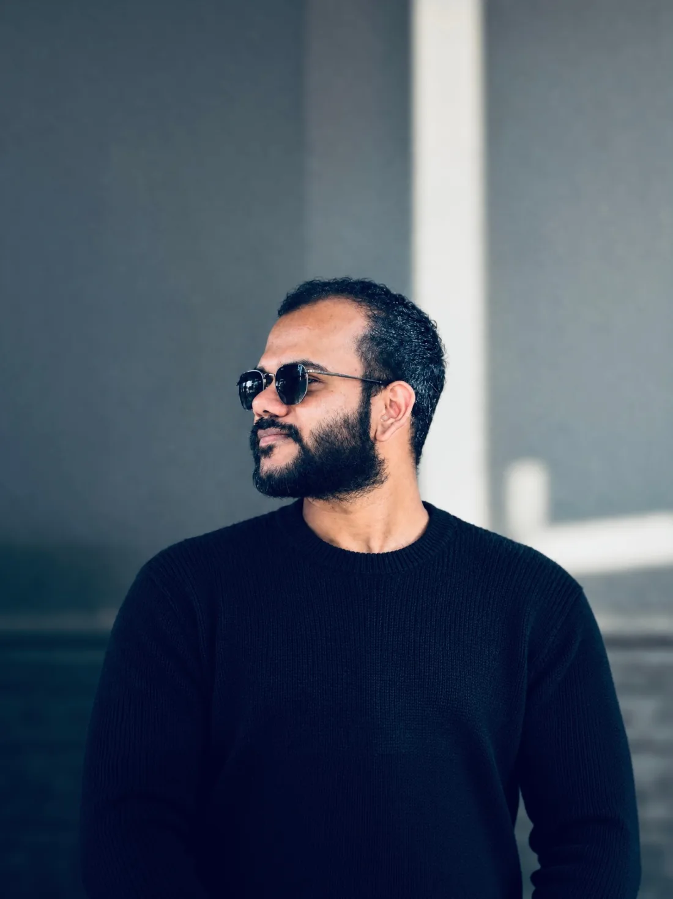
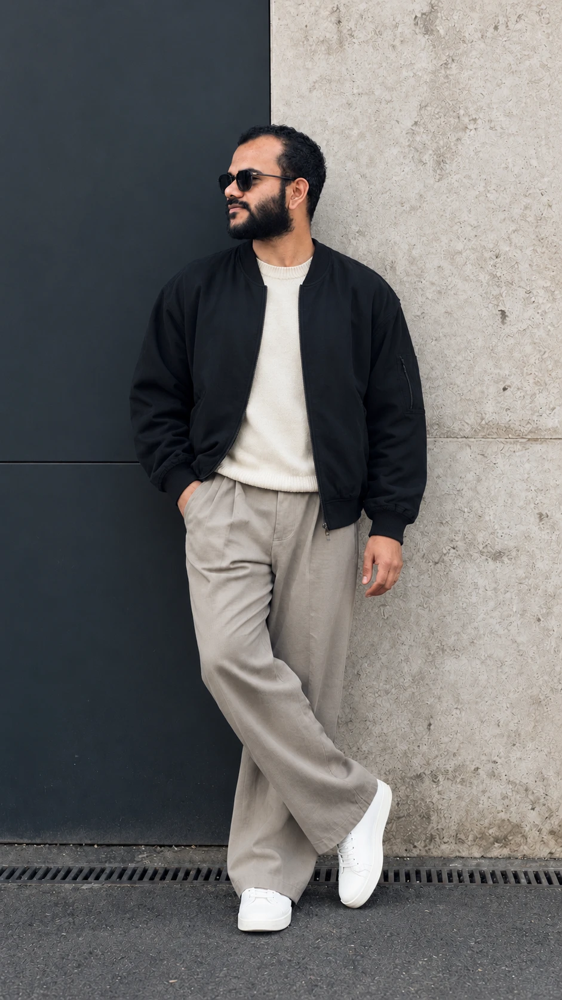
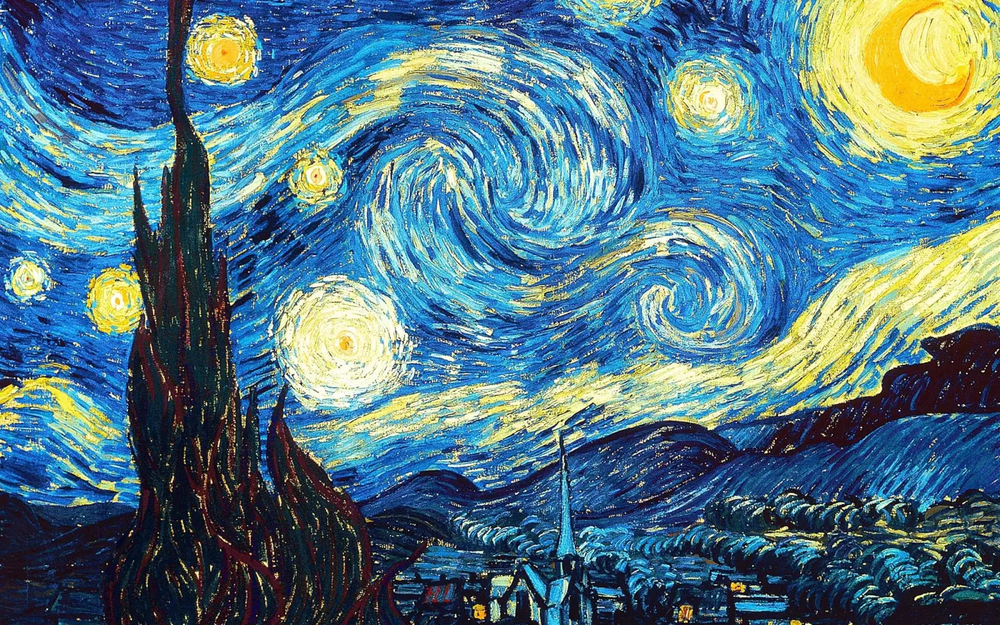
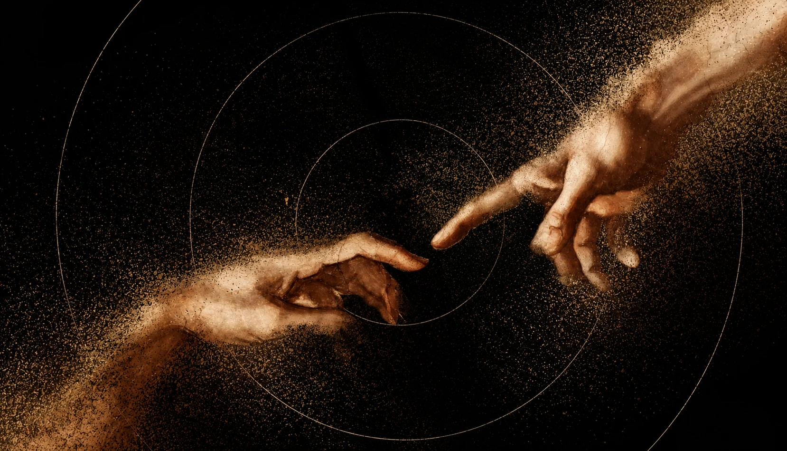

Amal Martin
A UI/UX DesignerWriterResearch ScholarFounding DesignerInteraction DesignerProduct DesignerBrand Designer
based in Bengaluru.
An interdisciplinary designer exploring how people think, behave, and interact with technology. My work spans UI/UX, product, graphic design, and brand identity, shaped by an interest in psychology, philosophy, and writing.
- Projects built from scratch
- 35+
- Years in interdisciplinary design
- 4+
- Research scholar · Computer Science
- HCI.

In a world where AI lets everyone build, what makes a product stand apart is the thought behind it. Because art comes from somewhere no algorithm or AI can reach: a life lived.
Made by a human is the new luxury

“The only way to do great work is to love what you do.”
Steve Jobs
- Based in
- Bengaluru, India
- Currently
- UI/UX Designer, Kristu Jayanti Software Development Centre
- Also
- Research Scholar in Computer Science · Writer · Poet
- Research
- Human–Computer Interaction: user psychology, cognitive science & technology
- Languages
- Malayalam (mother tongue) · English · Hindi · Kannada · Tamil · Telugu
Experience
Full-time
-
May 2024 – Present
Bengaluru, Karnataka
Current
Kristu Jayanti Software Development Centre
Full-time
Built 35+ projects from scratch, from first sketch to shipped product, creating extensive design systems and branding for every one of them.
0 → 1 Product DesignDesign SystemsBrandingUI/UX-
UI/UX Designer
Jul 2024 – Present
-
Software Engineer Intern
May 2024 – Jul 2024 · On-site
-
-
Oct 2020 – Jun 2022
Malur, Karnataka · On-site
IT Support & Creative Designer
Christ International School · Full-time
Graphic DesignImage EditingVideo EditingVideographyPhotographyERP SoftwareWireless NetworkingCommunicationMultitasking
Internships
-
Jan 2024 – May 2024
QA Tester & UI/UX Designer
Encryptus™ · Internship
UI/UX DesignUX ResearchFigmaTestingTest AutomationTest PlanningTest CasesTest Management -
Mar 2023 – Jun 2023
Jr. Software Developer
Rats Technologies · Internship
Freelance & contracts
-
Jul 2022 – Present
Bengaluru · Remote
Current
Freelance
UI/UX and graphic design
-
UI/UX Designer
Jan 2023 – Present
-
Graphic Designer
Jul 2022 – Present
Clients
-
IVY Cultured Living Pvt. Ltd
Creative Designer · Nov 2025 – Present · Hybrid
-
CUFA
UI/UX Consultant · Jan 2024 – Present
-
HigherEd for All
Content Writer & Creative Designer · Jun 2023 – Dec 2024 · India
WireframingUser Interface DesignUX ResearchUser ExperienceFigmaPrototypingUser ResearchUser FlowsGraphic DesignGraphic Design PrinciplesAdobe PhotoshopColor TheoryCommunicationAttention to DetailMultitasking -
Education

Research Scholar, Computer Science
Kristu Jayanti University
Research in Human–Computer Interaction, where user psychology, cognitive science and technology come together to shape how people use what we build.
-
Aug 2022 – Jun 2024
Master’s degree, Computer Applications
Kristu Jayanti University
Figma -
Jul 2017 – Sep 2020
Bachelor of Computer Applications
Christ College of Science and Management
-
Jul 2015 – May 2017
PUC
Krupanidhi Residential PU College
-
Jun 2009 – May 2015
Christ International School
-
Jun 2005 – Mar 2009
Carmel Convent High School
Need a brand from zero, a research sprint, a fresh pair of eyes on what you’ve already built, or a voice on stage? Let’s scope it together.
#01
Brand Colors
Considered palettes with clear rules for contrast, usage and accessibility, built to hold up across screens and print.
#02
Brand Identity
Logo, typography and visual language that make a brand instantly recognisable, plus the guidelines that keep it consistent.
#03
User Research
Interviews, usability tests and synthesis, grounded in HCI and user psychology, that turn what people say and do into clear design decisions.
#04
Market Research
Competitor and landscape analysis that shows where your product can stand apart.
#05
UX Design
User flows, information architecture, wireframes and prototypes: structure before surface.
#06
UI Design
Polished, accessible interfaces and scalable design systems, ready for a smooth hand-off to developers.
#07
UI/UX Audit
A clear review of an existing product: usability issues, inconsistencies and quick wins, prioritised.
#08
Consultant
On-call design guidance for teams, from product direction and process to hand-off.
#09
Talks
Talks and workshops on design, creative practice and writing, for teams, campuses and events.
#10
FreeMentoring
Portfolio reviews, career advice, or just a conversation. Free, for anyone starting out in design. Reach out any time.

I create, therefore I am.
Passion
I write for the love of it. Love, loss, grief, wonder, philosophy, psychology, nature, romance, the small moments that turn out to be the large ones.
Available for freelance & contract
Let’s talk.
Have a product to design, a brand to shape, or a story to tell? Write, call, or find me elsewhere.